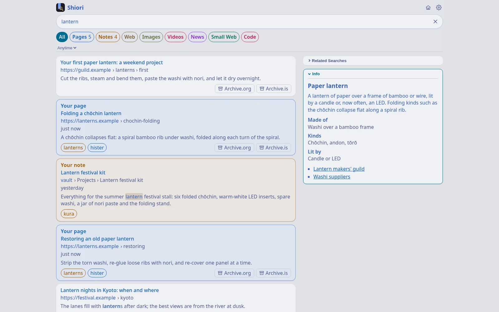
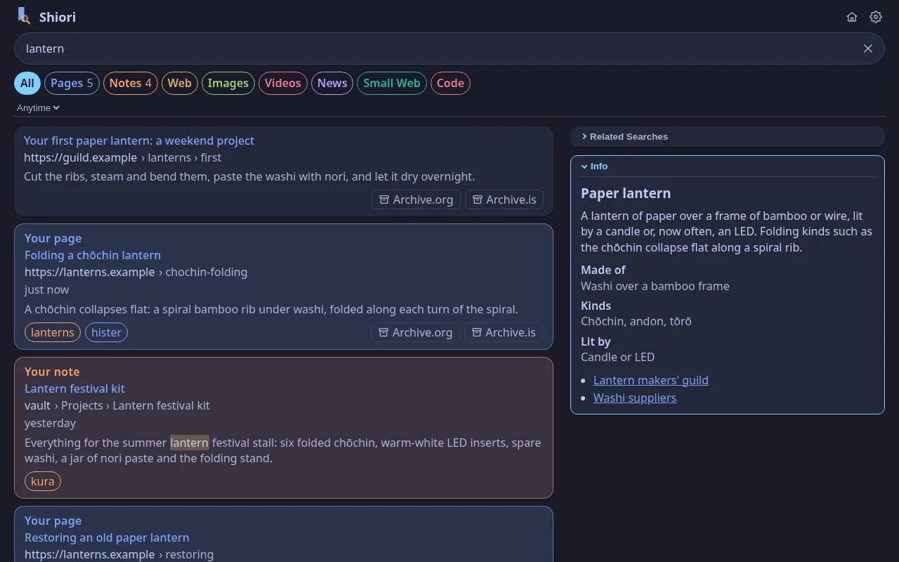
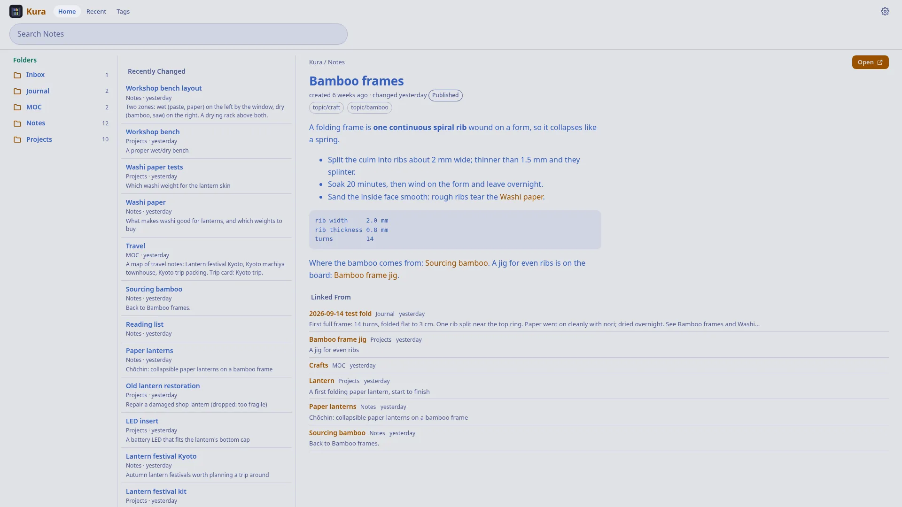
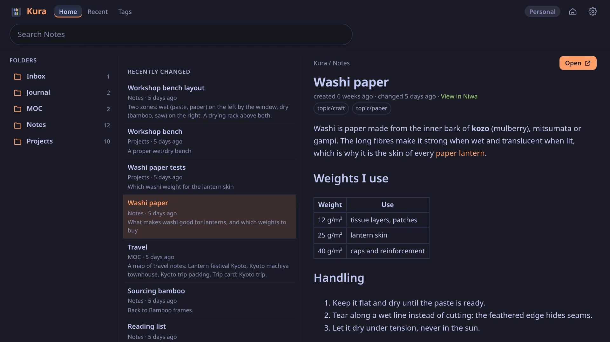
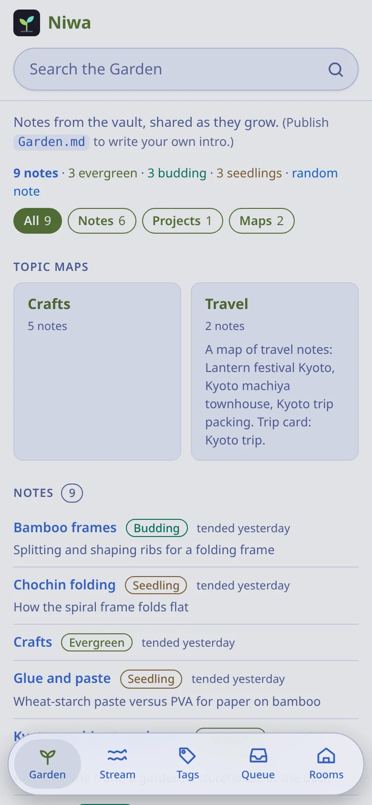
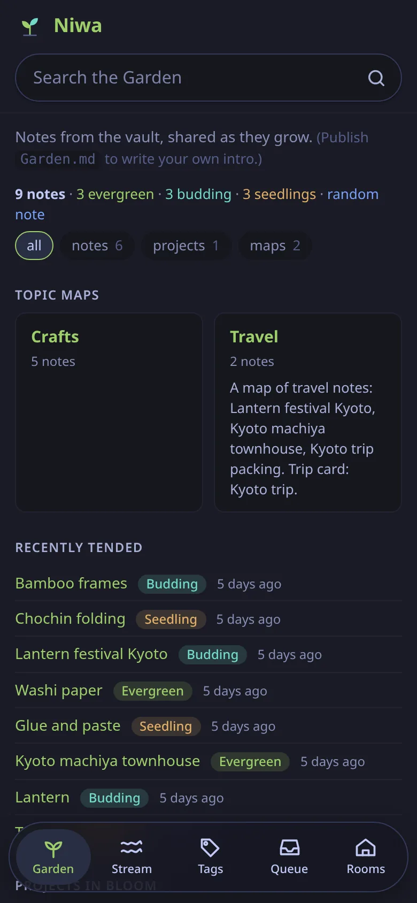
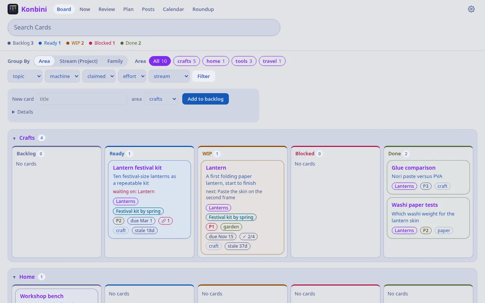
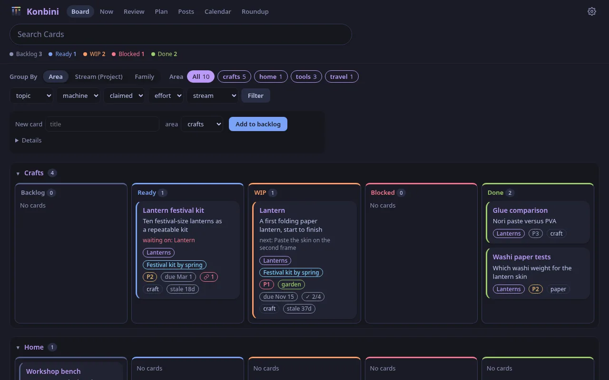
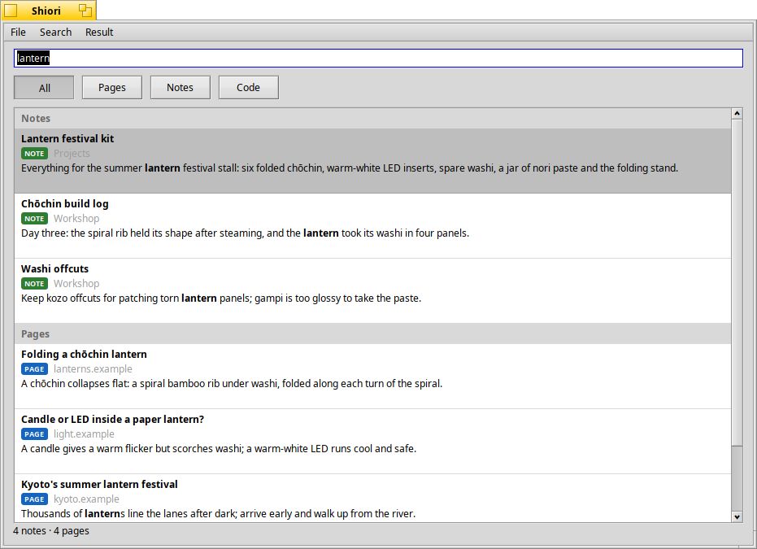
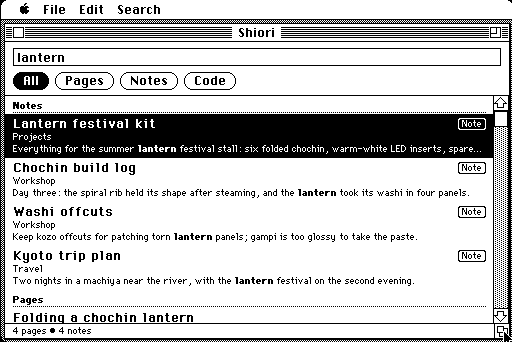

Search your pages, notes, code and the World Wide Web
Shiori, Hister and SearXNG
Browse as usual: Hister's official extensions save what you read in Firefox and Chrome, and hister-safari does it in Safari on the Mac. Shiori also comes with its own Safari extension for your iPhone, iPad and Mac.
With Shiori, your pages, notes and code are woven into results from SearXNG.


Read, curate and publish your notes
Kura and Niwa
Point Kura at your Obsidian vaults to read and search every note. Publish the ones you want to share to a digital garden that grows with your projects.




Manage your projects
Konbini
Turn your Obsidian notes into cards on a kanban board to track your projects and goals.


It's the little things
- Native share sheet support on iPhone, iPad and Mac.
- Offline support. Saved pages sync when you're back on The Internet.
- Notes open in Obsidian, or preview in Machiya's rooms.
- Archive.org and Archive.is support: every web result links to archived snapshots.
- Meet your audience where they are: Niwa publishes to the Web, Gopher and Gemini.
- A writing kit that lays out a finished project for its blog post.
- Keep your AI agents in the loop with skills and a fully featured MCP server.
- Runs in containers or natively on Linux, FreeBSD, NetBSD and OpenBSD, on arm64 or amd64.
- Native Shiori apps for popular platforms and progressive web apps for Kura, Niwa and Konbini.
- Support for your esoteric tastes: Shiori natively runs on Haiku and Classic Macintosh.

